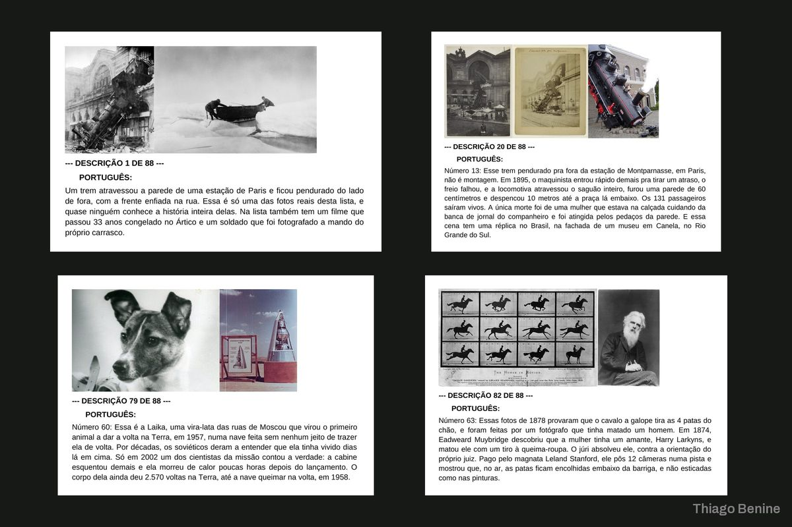
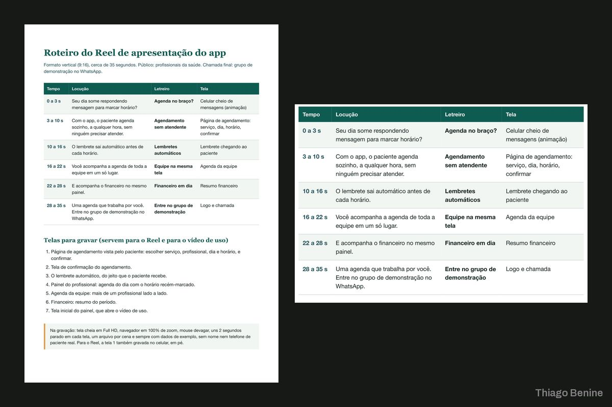
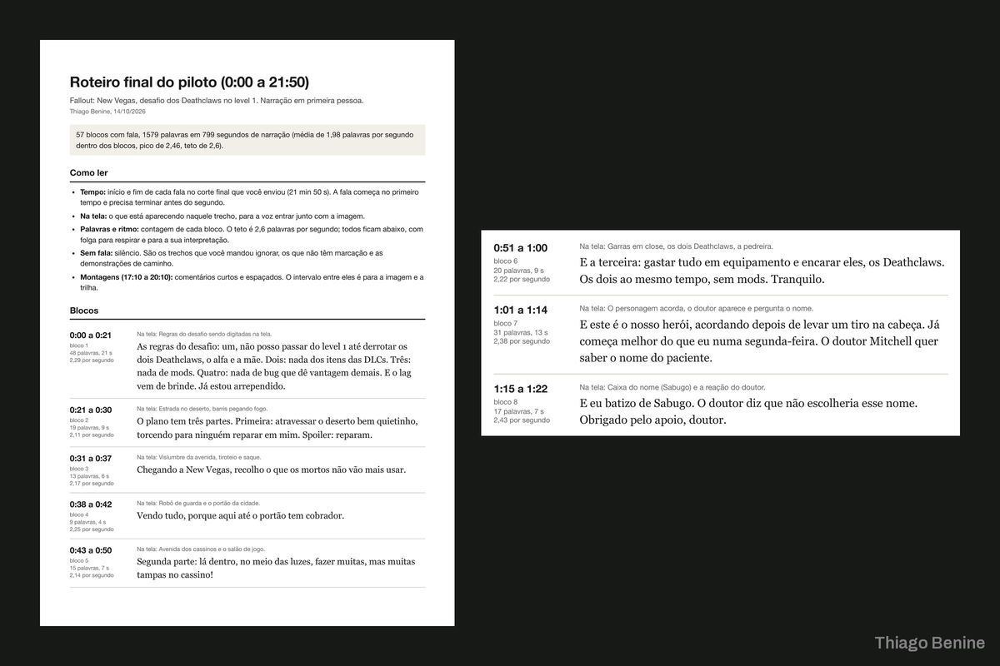

Ajustes finos no perfil do LinkedIn
Segunda etapa com a mesma cliente: as melhorias definidas foram aplicadas seção por seção.
Sobre o projeto
Com o posicionamento pronto, a cliente voltou para aplicar as melhorias no perfil. As mudanças definidas foram aplicadas seção por seção, com ajustes a cada rodada até ficar do jeito que ela queria.
O que foi entregue
- Melhorias aplicadas no perfil
- Rodadas de ajuste
Avaliação do cliente
5,0 de 5
Demonstrou conhecimento sobre o LinkedIn, ouviu minhas necessidades e fez todos os ajustes com muita dedicação. [...] O resultado ficou melhor do que eu esperava!
Projetos parecidos


